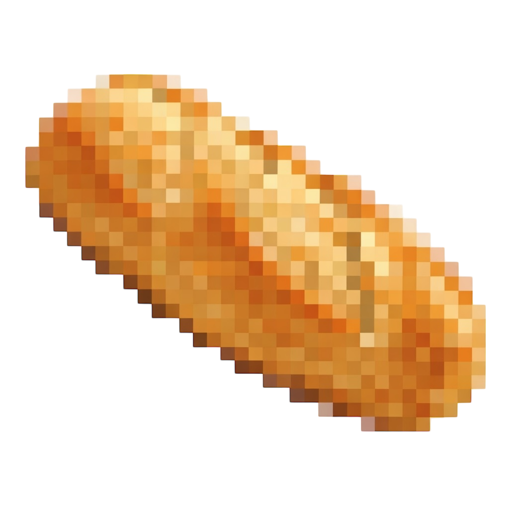

WHY BREAD RISE?
Bread - not randomly chosen.
It's rooted in my last name, which literally translates to "bread".
Rise - because growth is not an option. It's the baseline.
I'm a content creator with 4+ years of real platform experience.
Not theory. Not trends. Real audience. Real performance.
Before AI was hype, I was already building visuals,
understanding framing, light, composition, rhythm.
Neural networks didn't replace my skill. They amplified it.
Years of working in real content shaped my eye:
- precise frame
- controlled light
- intentional composition
- high-end feel that reads instantly
I don't use AI to "generate content". I use it to direct visual systems.
For brands this means campaigns that don't look synthetic.
For creators this means learning how to think, not just prompt.
Bread Rise exists because AI without taste is noise.
And taste is built offline.